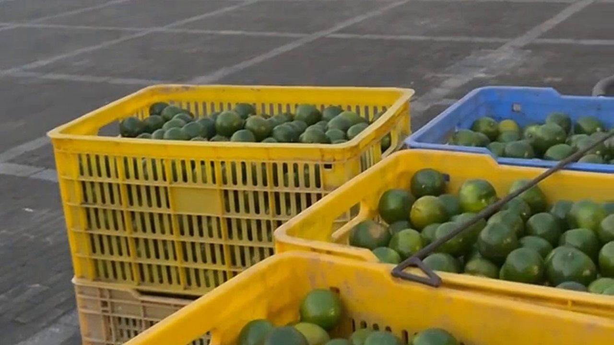
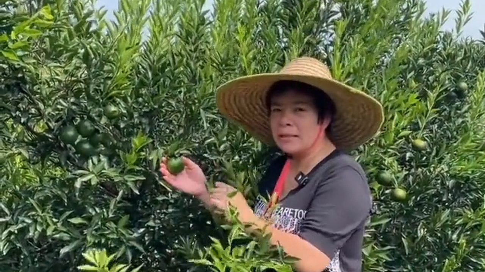
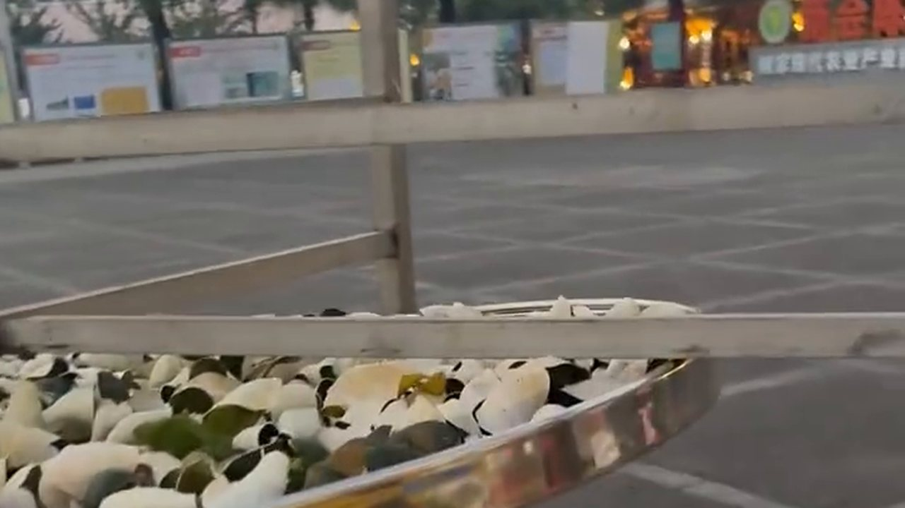
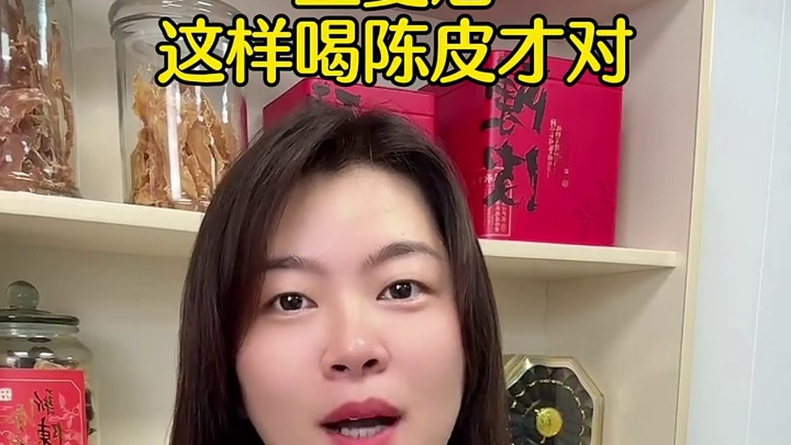

九月中收的青柑，這幾天陸續上市了。陳皮村廣場上，黃的藍的筐子一字排開，裡面的青柑還是油亮亮的綠。有人拉走一整車，有人只挑兩筐——說是「存一點」。
我一早到廣場，就聽到一位客人問滢滢姐那句話：「青皮係咪都可以當陳皮存？」這個問題問得很好，也問得很危險——答錯了，三年後就會失望。
一、廣場上的青柑筐：一兩半是什麼規格

收青柑的阿叔一邊翻筐一邊報規格：「呢批係一兩半嘅，九月中收嘅。」
「一兩半」是行內講單果重量的說法。同一棵茶枝柑，一年收三批：青柑（約八至十月，皮青、油室鼓起、藥性偏猛）、二紅（重陽後轉黃，香氣轉甜）、大紅（冬至前後全紅，皮厚油室飽，是陳化的主力）。
九月中這批青柑，個頭不算大，但油室飽、香氣清冽，是青皮與小青柑的原料。
「青皮同陳皮，唔係同一樣嘢。呢個要講清楚，唔係客人存三年都唔知存咗啲乜。」
二、「青皮係咪都可以當陳皮存？」

那位客人姓李，是第一次來陳皮村。他的想法很常見：反正都是新會柑的皮，青的、紅的，放久了不都變成陳皮嗎？
滢滢姐搖頭，但不是全盤否定——她把兩件事分開講：
第一，青皮不是「年輕的陳皮」。青皮與陳皮在中藥裡是兩味藥，採收期不同、藥性也不同：青皮藥性偏「猛」，主疏肝破氣；陳皮（大紅皮陳化）偏「和」，主理氣健脾。拿青皮當陳皮天天喝，對不少人來說太「衝」。
第二，但存青皮有它自己的道理。青皮的香氣層次感特別濃郁，清冽的柑香裡帶一點辛；放上十年，會慢慢轉出藥香與薄荷香——這股涼意，是老茶客特別喜歡的東西。
「咁我應該存青皮定大紅皮？」
「你平日飲茶定入藥？飲茶、想香氣清冽嘅，存青皮；想煲湯、理氣健脾、日日飲嘅，買大紅皮。兩種都存，最好。」
三、生曬不落地：就差這一步

阿叔指着自己的筐說了一句話：「我哋全部都係生曬唔落地嘅。」
這句話值錢。所謂「不落地」，就是柑皮從開出來到曬乾，全程不接觸地面——攤在竹篩、竹架、離地的屋頂曬架上，而不是鋪在水泥地或柏油路上。
差別在哪裡？
· 通風：離地架子上下都能過風，皮乾得均勻，不會一面乾一面悶；
· 防潮：地面會有回潮與積水，貼地的皮最容易起霉；
· 乾淨：泥沙、車塵、蟲蟻都在地上，離地就避開了。
這也是新會人常說的：價格差一點，往往就差在這一步。同一片新會柑皮，落地曬與離地曬，外行看不出，行家一摸一聞就知道。
四、當天開皮：三刀下去，不能隔夜
青柑摘下來，當天就要開皮。晚一天，果就蔫了，皮就不香了。
做皮三十多年的陳師傅，三刀下去，一張青皮整整齊齊攤開。這道工序在非遺名錄裡叫三瓣開皮，要點是：刀口薄厚均勻，不傷油室——油室就是香氣的容器，劃破了，香氣就散在空氣裡，而不是留在皮裡。
「開皮睇手勢，陳化睇心機。開錯咗一刀，之後點曬都補唔返。」
青皮因為皮身較薄、水分較足，開皮後要反皮（內囊朝上）再曬，這樣油室那一面朝下，香氣留得住，顏色也不會曬花。
五、存青皮的三個要點，與一個殘酷事實

如果你真的想存一點青皮，滢滢姐給出三個要點：
一、要足月。九月中之後、油室飽滿的青柑才值得存；為搶價早摘的，皮薄油空，放十年也放不出香。
二、當天開皮、離地生曬。這兩步是底線，做不到就別談陳化。
三、存得乾、翻得勤。通風乾燥的環境，頭幾年每年翻曬一至兩次；一發現回軟，就要立刻見太陽。
然後是一個殘酷的事實：存青皮比存大紅皮更考功夫。青皮皮薄、糖分低，轉化慢，頭五年喝起來又辛又烈，很多人等不到那個「薄荷涼」就放棄了。
「所以行家存青皮，圖嘅係十年後嗰陣涼。你等唔到，就唔好開始。」
常見問題
青皮和陳皮有什麼區別？能互相替代嗎？不能替代。青皮約八至十月採、皮青、藥性偏猛，主疏肝破氣；陳皮多為大紅皮陳化、藥性偏和，主理氣健脾。兩者在中藥裡是不同的藥。
為什麼現在很多人開始存青皮？青皮香氣層次濃郁、清冽帶辛，存放十年後會轉出藥香與薄荷香，這股涼意是老茶客的最愛；加上青皮產量集中在九至十月，價格相對可控。
「生曬不落地」是什麼意思？差別在哪？指柑皮從開出到曬乾全程不接觸地面，攤在竹篩、竹架或離地屋頂架上。差別在通風（乾得均勻）、防潮（不易起霉）、乾淨（避開泥沙蟲蟻）。
青皮要怎麼存？存幾年會變什麼樣？要足月果、當天開皮、離地生曬；存於通風乾燥處，頭幾年每年翻曬一至兩次。頭五年辛烈，十年左右轉出藥香與薄荷涼意，二十年以上更沉。
九月的青柑「一兩半」是什麼規格？是行內講單果重量的說法。九月中這批青柑個頭不大，但油室飽、香氣清冽，是青皮與小青柑的原料。
什麼人適合存青皮？什麼人該買大紅皮？想喝清冽柑香、入藥或做小青柑的，可以存青皮；想煲湯、日常理氣健脾、天天喝的，買大紅皮更合適。兩種都存最理想。
結語：存的是皮，等的是那口涼
離開廣場時，李生挑了兩筐青柑，說先存著試試。阿叔笑着補了一句：「唔好放喺廚房，唔好放喺地下，記住囉。」
新會人有句話：青皮是「急脾氣」的皮，大紅皮是「好脾氣」的皮。存青皮，其實是跟自己較勁——你能不能忍住頭五年的辛烈，等到十年後的那口涼。
想弄清青皮與陳皮的根本分別，看這篇《青皮不是「年輕的陳皮」：新會柑三種採收時機，一次講清》；想知道十月開鐮之後，果子是怎麼過磅進場的，翻翻這篇《十月開鐮：新會柑開採了》。
下期預告：青皮存到第三年會發生什麼？滢滢姐把三批不同年份的青皮擺在一起沖給你看——同一棵樹的皮，三年、五年、十年，香氣走了三條完全不同的路。